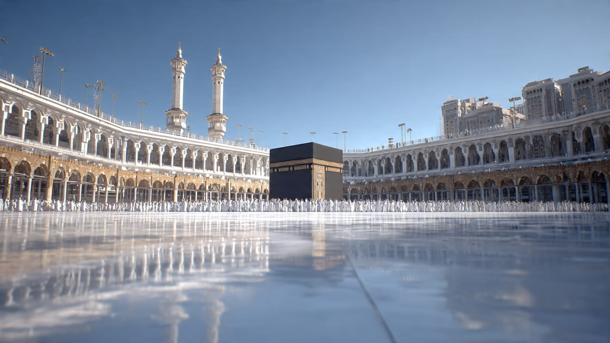
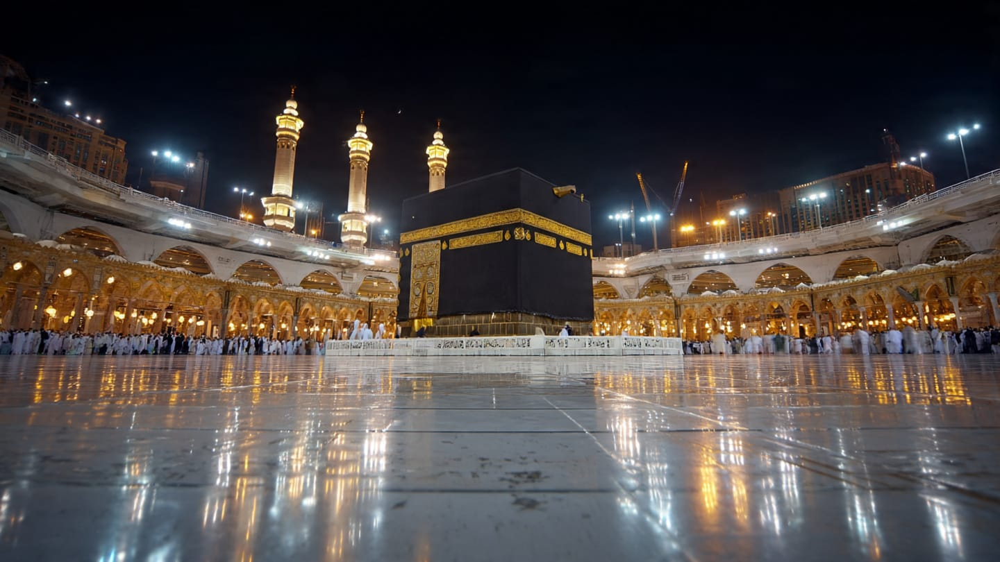

MASJID BAITUL RAHMAN
Membangun Kebersamaan Dalam Iman
Jl. Gatot Subroto No. 517 Bandung
Kota Bandung
Kabupaten Bandung
00:00:00
-
-
WAKTU BERIKUTNYA
-
00:00:00
Menuju waktu
-
Sesungguhnya shalat itu adalah kewajiban yang ditentukan waktunya atas orang-orang yang beriman | Mari Tebar Kebaikan dengan ZIS (Zakat, Infak, Sedekah) | Mohon Matikan/Silent Nada Dering Handphone
Jemput Donasi | Hubungi : DKM Masjid Baitul Rahman